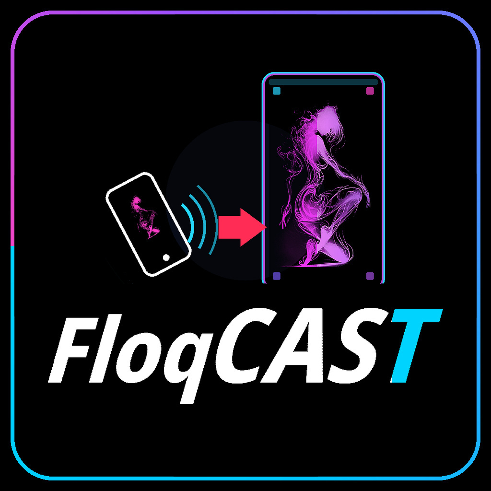

floqCast
?
Go live as a floqCast
Be a superstar — pick a venue, preview yourself privately, pay $20, get Club Admin approval, then go live on the floqCast board.
Also known as: floqCast, superstar, super star, super-star.